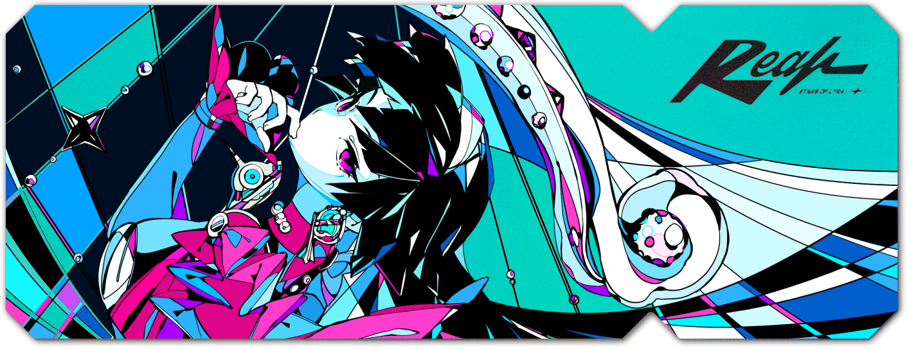

Project 1

For "ZZZ", I was tasked with capturing the essence of the game's world—its rich lore, vibrant characters, and immersive environments—while adding my own unique artistic touch. The process involved close collaboration with the game's creative team, where we shared ideas, explored the game's themes, and worked together to design a piece that would resonate with the game's fans.